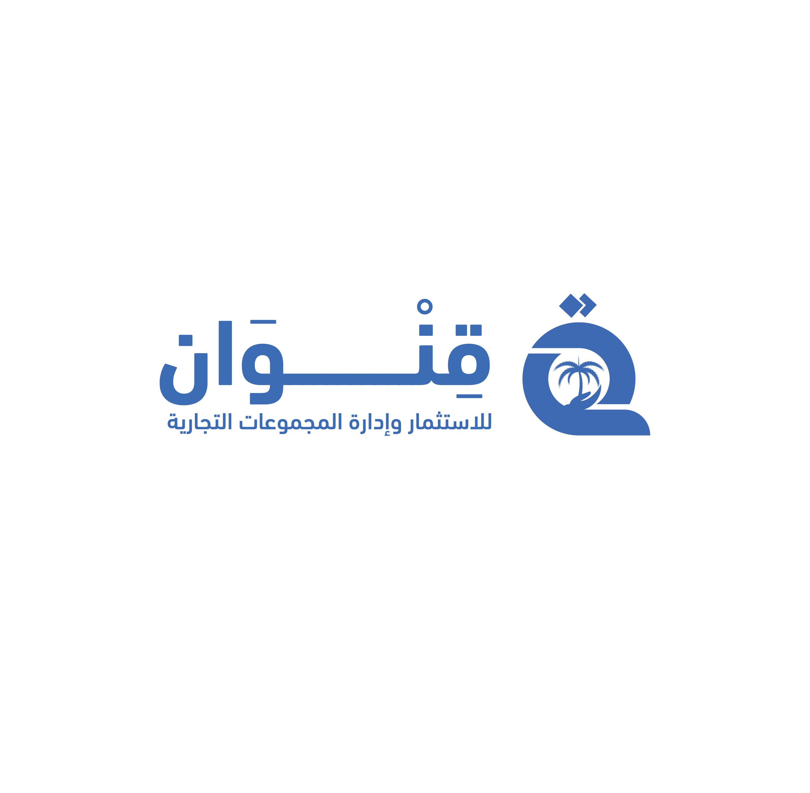
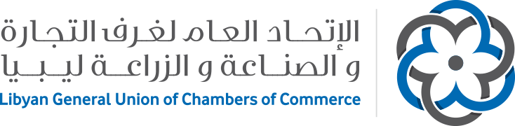
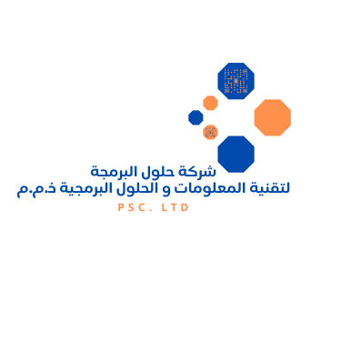

مبادرة قنوان الوطنية للتحول الرقمي
مشروع المنصة الرقمية الموحدة لغرف التجارة والصناعة والزراعة الليبية
فهرس المحتويات
الملخص التنفيذي
يعرض هذا الكتاب المسار التنفيذي والتشغيلي لمبادرة قنوان الوطنية للتحول الرقمي ومشروع المنصة الرقمية الموحدة للغرف التجارية الليبية، مع التركيز على الرؤية، نموذج التشغيل، مراحل التأسيس، التدريب، الهياكل التنظيمية، وآليات التصعيد دون الدخول في تفاصيل مؤشرات الأداء الرقمية التي أصبحت في كتاب مستقل.
يركز هذا الكتاب على قصة المبادرة: من التفاهمات والدراسة والنمذجة إلى التدريب والإطلاق وبناء نموذج تشغيل قابل للاستدامة.
تم فصل مؤشرات الأداء التفصيلية في كتاب مستقل لتبقى قراءة المبادرة واضحة ومركزة على السياق التنفيذي والمؤسسي.
مبادرة قنوان الوطنية للتحول الرقمي
أطلقت مبادرة قنوان الوطنية للتحول الرقمي تحت بند مبدأ المسؤولية الاجتماعية الذي تنتهجه مؤسسة قنوان للاستثمار وإدارة المجموعات التجارية، وتحت رعاية كريمة من مؤسسة الاتحاد العام لغرف التجارة والصناعة والزراعة ليبيا.
تهدف المبادرة إلى تحقيق رؤية قنوان 2030 لريادة الأعمال التقنية والتحول الرقمي وتوطين التكنولوجيا الحديثة، مساهمة منها في وضع حلول رقمية للمؤسسات بما يلائم احتياجاتها ويرفع من كفاءتها التشغيلية ويزيد من الإنتاجية، ويرسم ملامح هوية رقمية حقيقية للمؤسسات المستهدفة والأطراف المتعاملة معها.
أهداف المبادرة
- تمكين مؤسسات القطاعين العام والخاص من مواكبة التحول الرقمي من خلال تقديم حزمة حلول رقمية وإدارية تحت غطاء المبادرة.
- ضمان حصول الجهات المستهدفة على أصول رقمية منتجة ومنصات وتطبيقات ترفع من كفاءتها الإنتاجية والخدمية.
- تطبيق نموذج التشغيل التقني والإداري كآلية عملية لاستقرار المشروع واستدامة نجاحه.
- تهيئة فرصة حقيقية للقطاعات المختلفة للحصول على حلول رقمية قابلة للتطبيق دون تعقيد إداري أو تقني عند بداية التحول.
- ضمان آلية تشغيل واضحة تحافظ على كفاءة الأصل الرقمي واستمرارية تحديثه ومساندة مستخدميه على المدى الطويل.
مبادرة قنوان الوطنية تمثل مساهمة حقيقية في مواكبة التحول الرقمي وبناء ليبيا الرقمية.
نموذج التشغيل التقني والإداري
يعتمد النموذج على إطار تشغيلي يحقق التوازن ويكفل استدامة كفاءة الأصل الرقمي، من خلال توزيع واضح للأدوار بين التحليل والتطوير والتدريب والتشغيل والدعم الفني، وربط كل مرحلة بمخرجات قابلة للقياس والمتابعة.
| البند | الوصف التنفيذي | المخرج التشغيلي |
|---|---|---|
| التصميم والتحليل | دراسة المتطلبات وتجهيز النماذج الأولية وتحويل الاحتياج المؤسسي إلى مسارات رقمية. | وثائق نطاق ونماذج قابلة للمراجعة |
| الإنشاء والتطوير | برمجة وبناء المنصة وربط خدمات شهادات إثبات القيد وشهادات المنشأ والمرجعيات. | إصدارات تجريبية قابلة للاختبار |
| التدريب والتأهيل | تدريب الكوادر المستهدفة على الاستخدام والإدارة اليومية وآليات الدعم. | مستخدمون مؤهلون ومسارات عمل واضحة |
| تهيئة بيئة التشغيل | تجهيز بيئة الاختبار ثم بيئة التشغيل وفق متطلبات الاستقرار والمتابعة. | جاهزية فنية وتشغيلية للإطلاق |
| الدعم الفني L1 | استقبال الطلبات وفتح التذاكر والمعالجة الأولية وإرشاد المستخدمين. | استجابة مباشرة وتوثيق للحالات |
| الدعم الفني L2/L3 | التحليل الفني، الصيانة، التصعيد، والمعالجة المتقدمة للحالات التقنية. | حلول تقنية معتمدة وتحسينات مستمرة |
| التطوير المستقبلي | توسعة وتحسين الأصل الرقمي حسب الاحتياج التشغيلي ونتائج الاستخدام. | خارطة تحسين قابلة للتنفيذ |
بهذا التوزيع تتحول المنصة من مشروع تطوير مؤقت إلى أصل تشغيلي قابل للاستدامة، وتصبح المسؤوليات الفنية والإدارية والتدريبية واضحة منذ مرحلة التحضير وحتى مرحلة الدعم المستمر.
مشروع المنصة الرقمية الموحدة للغرف التجارية
يمثل مشروع المنصة الرقمية الموحدة للغرف التجارية الليبية أحد التطبيقات العملية لمبادرة قنوان الوطنية، حيث يهدف إلى بناء بيئة رقمية مركزية تدعم خدمات الغرف التجارية، وتربط شهادات إثبات القيد وشهادات المنشأ والعمليات المرجعية ضمن مسار أكثر انضباطاً وشفافية.
الرعاية والشراكة
يحظى المشروع برعاية الاتحاد العام لغرف التجارة والصناعة والزراعة ليبيا بوصفه شريكاً استراتيجياً وراعياً رسمياً لمسار التحول الرقمي للغرف التجارية. وتتكامل أدوار مؤسسة قنوان للاستثمار وإدارة المجموعات التجارية وشركة حلول البرمجة لتقنية المعلومات والحلول البرمجية في بناء وتشغيل وتطوير المنصة وفق نموذج يستند إلى الاستدامة التشغيلية.
القيمة المؤسسية
- توحيد الإجراءات الرقمية للغرف والمكاتب التابعة لها.
- تحسين جودة بيانات شهادات إثبات القيد وشهادات المنشأ ورفع قابلية التحقق.
- تقليل الاعتماد على المسارات الورقية ورفع سرعة الخدمة للمستفيد النهائي.
- توفير قاعدة قابلة للتوسع نحو خدمات رقمية إضافية مرتبطة بالقطاع التجاري.
المنجزات والمسار التنفيذي
يعرض هذا القسم مسار النجاح بذات آلية البيانات المستخدمة في التطبيق: مصدر بيانات واحد تُبنى منه الجداول تلقائياً حسب المرحلة، مع إظهار التاريخ والمحطة والتصنيف والبيان التنفيذي والأطراف ذات الصلة.
| التاريخ | المحطة | التصنيف | البيان التفصيلي | الأطراف |
|---|
مسار الاعتماد والتجربة الميدانية
| التاريخ | المحطة | التصنيف | البيان التفصيلي | الأطراف |
|---|
مسار التكليف والجاهزية والتشغيل
| التاريخ | المحطة | التصنيف | البيان التفصيلي | الأطراف |
|---|
مرحلة التدريب والجاهزية قبل انطلاق التشغيل
مثلت المرحلة الممتدة من نوفمبر 2025 إلى فبراير 2026 الجسر العملي بين النسخ التجريبية وبين الإطلاق الرسمي؛ ففي هذه الفترة لم يكن التدريب نشاطاً جانبياً، بل كان مساراً تأسيسياً لاختبار قدرة المستخدمين على التعامل مع المنصة، وفهم تسلسل الإجراءات، وتحديد نقاط الالتباس قبل دخول الخدمات إلى بيئة التشغيل الفعلي.
أهم ما ميز هذه المرحلة أنها جمعت بين التدريب والتجريب والتحسين في دورة واحدة: تظهر ملاحظة من المستخدم، ثم تتحول إلى توجيه أو تعديل أو توثيق، ثم تعاد تجربتها في جلسة لاحقة. وبهذا تحولت ساعات التدريب إلى مختبر تشغيل مصغر، ساعد على تقليل فجوة الانتقال من النظام الورقي إلى النظام الرقمي، ورفع ثقة المستخدمين في التعامل مع المنصة قبل فتحها للتشغيل.
الهيكل التنظيمي التشغيلي
يعتمد التشغيل على هيكل تصعيد واضح يربط الإدارة العامة بالدعم الفني والمراقبة وفرق التطوير، بما يضمن استقبال الطلبات، تصنيفها، معالجتها أو تصعيدها، ثم إغلاقها وتوثيق أثرها.
المستوى L0 - القيادة والإشراف
المستوى L1 - الدعم المباشر
المستوى L2 - التشغيل والسيرفرات
المستوى L3 - الدعم والتطوير
مخطط الهيكل التنظيمي لفريق التشغيل
يعرض هذا المخطط الهيكل الإداري والفني ومسارات الإشراف والتنسيق والتصعيد بين مستويات إدارة المشروع والدعم الفني والبنية التحتية وفريق التطوير.
graph TD
PM["مدير المشروع<br>Project Manager"]
DPM["نائب مدير المشروع<br>Deputy Project Manager"]
subgraph L1 [مكتب الدعم / Support Office]
L1M["مدير مكتب الدعم<br>Support Office Manager"]
L1A["مساعد مدير المكتب<br>Assistant Support Manager"]
end
subgraph L2 [البنية التحتية / Infrastructure]
S1["مسؤول أول (سيرفرات)<br>Senior Server Admin"]
S2["مسؤول ثاني (شبكة)<br>Network Admin"]
end
subgraph L3 [فريق الدعم التقني / Technical Support Team]
LEAD["مدير فريق الدعم التقني<br>Technical Support Lead"]
BE["مهندس باك إند<br>Backend Engineer"]
FE["مهندس فرونت إند<br>Frontend Engineer"]
QA["مهندس جودة واختبار<br>QA Engineer"]
SEC["مسؤول أمن سيبراني<br>Cybersecurity Officer"]
DEVOPS["مساعد مدير الفريق (نشر)<br>DevOps Assistant"]
end
PM -->|"(1) إشراف واعتماد"| DPM
PM -->|"(2) توجيه استراتيجي"| L1M
PM -->|"(3) متابعة تنفيذية"| LEAD
DPM -->|"(4) متابعة يومية"| L1M
DPM -->|"(5) تنسيق عملياتي"| LEAD
L1M -->|"(6) إدارة تشغيلية"| L1A
L1M -->|"(7) توجيه تشغيلي"| S1
L1M -->|"(8) توجيه تشغيلي"| S2
L1M -->|"(9) توجيه دعم"| LEAD
LEAD -->|"(10) توزيع مهام"| BE
LEAD -->|"(11) توزيع مهام"| FE
LEAD -->|"(12) تنسيق اختبار"| QA
LEAD -->|"(13) تنسيق أمني"| SEC
LEAD -->|"(14) إشراف على النشر"| DEVOPS
S1 -->|"(15) تعاون بنيوي"| S2
S1 -->|"(16) تصعيد تقني"| LEAD
S2 -->|"(17) تصعيد شبكي"| LEAD
BE -->|"(18) تسليم كود"| QA
FE -->|"(19) تسليم واجهات"| QA
QA -->|"(20) تقارير جودة"| LEAD
QA -->|"(21) نتائج اختبار"| SEC
SEC -->|"(22) موافقة أمنية"| DEVOPS
SEC -->|"(23) ملاحظات أمنية"| LEAD
DEVOPS -->|"(24) نشر وإشعار"| DPM
DPM -->|"(25) اعتماد تشغيلي"| PM
الهيكل التنظيمي التشغيلي
يعرض هذا الشكل نفس الهيكل التنظيمي في صيغة بطاقات تشغيلية مختصرة، بحيث يمكن قراءة مستويات المسؤولية والأدوار قبل الانتقال إلى مسار الإجراءات والتصعيد.
هذا العرض يربط مسمى كل دور بمسؤوليته التشغيلية المختصرة، ويهيئ القارئ لفهم مخطط الإجراءات التالي.
مخطط سير البلاغات والتصعيد التشغيلي
يوضح هذا المخطط مسار التعامل مع البلاغات والطلبات منذ الاستقبال وحتى الإغلاق والتوثيق، مع نقاط التصعيد بين مستويات الدعم.
يساعد وضوح الهيكل ومسار التصعيد على تقليل زمن المعالجة، ورفع جودة التوثيق، وربط الحالات المتكررة بخطط تحسين تشغيلية قابلة للقياس.
خاتمة كتاب المبادرة
يؤكد كتاب المبادرة أن المنصة الرقمية الموحدة انتقلت من فكرة ومبادرة إلى أصل رقمي عامل، وأن استدامتها تعتمد على وضوح الحوكمة، استمرارية التدريب، وثبات نموذج التشغيل التقني والإداري.
تم تخصيص كتاب مستقل لمؤشرات الأداء حتى تبقى قراءة هذا الكتاب مركزة على المسار التنفيذي والمؤسسي لمبادرة قنوان الوطنية للتحول الرقمي.